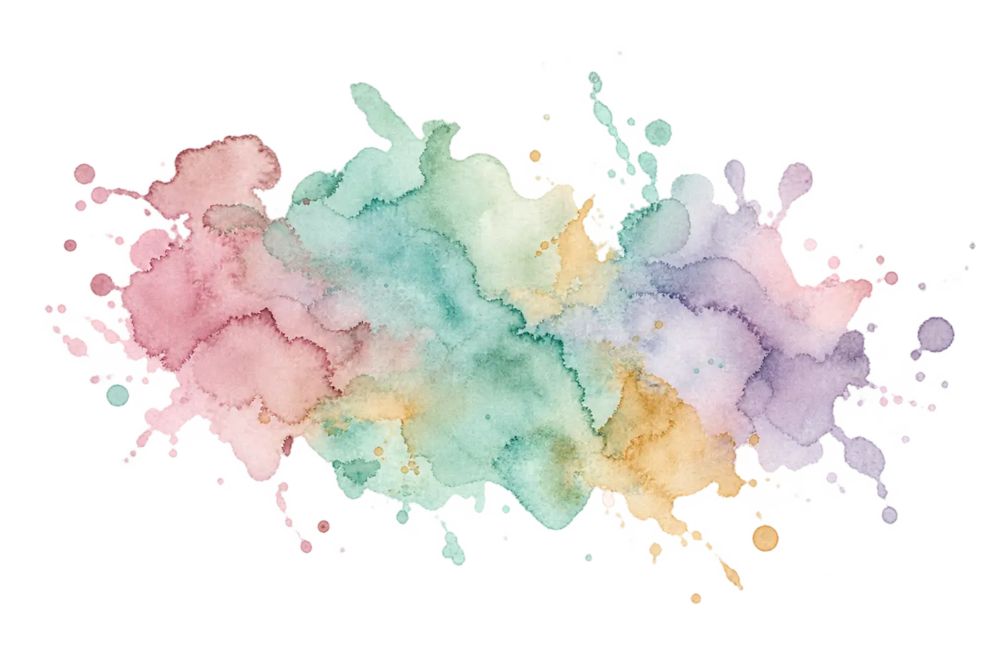
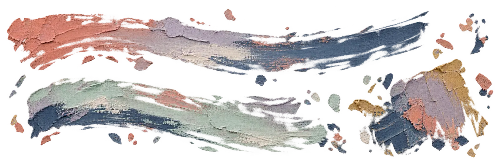
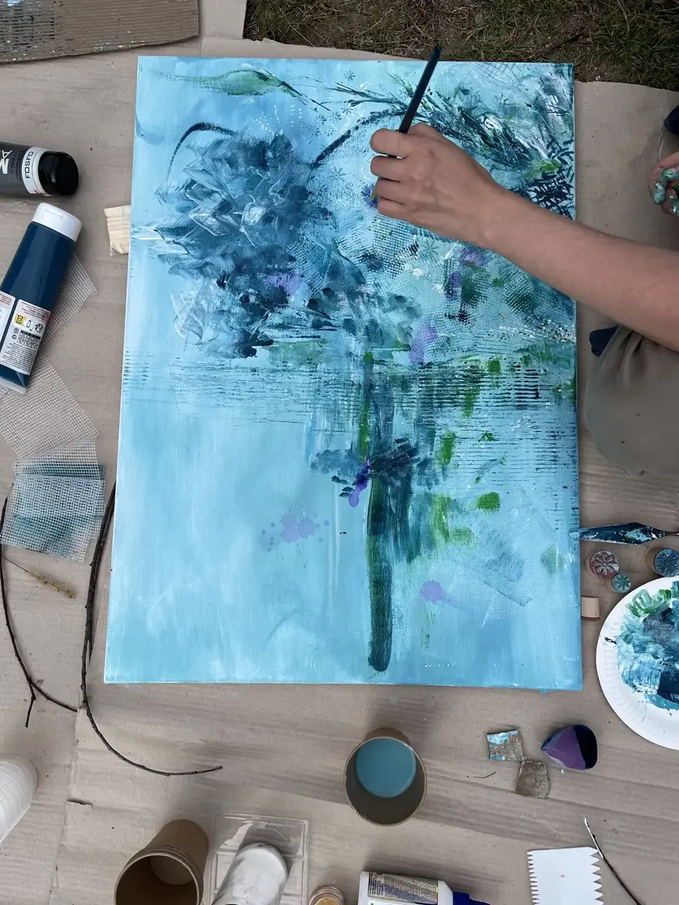
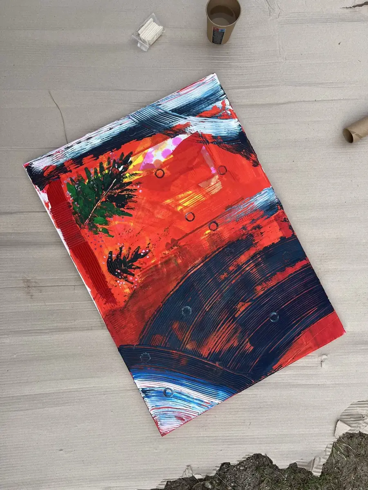
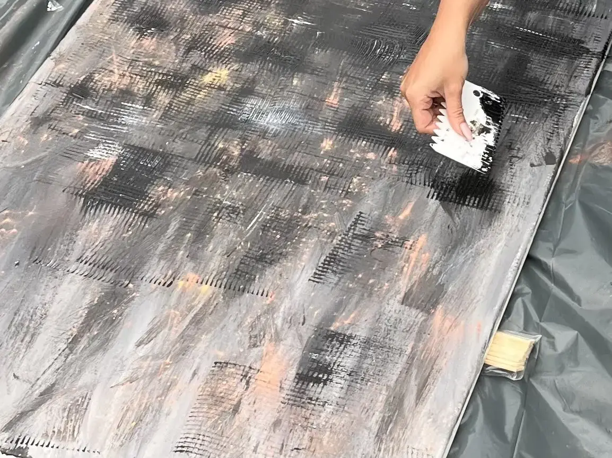
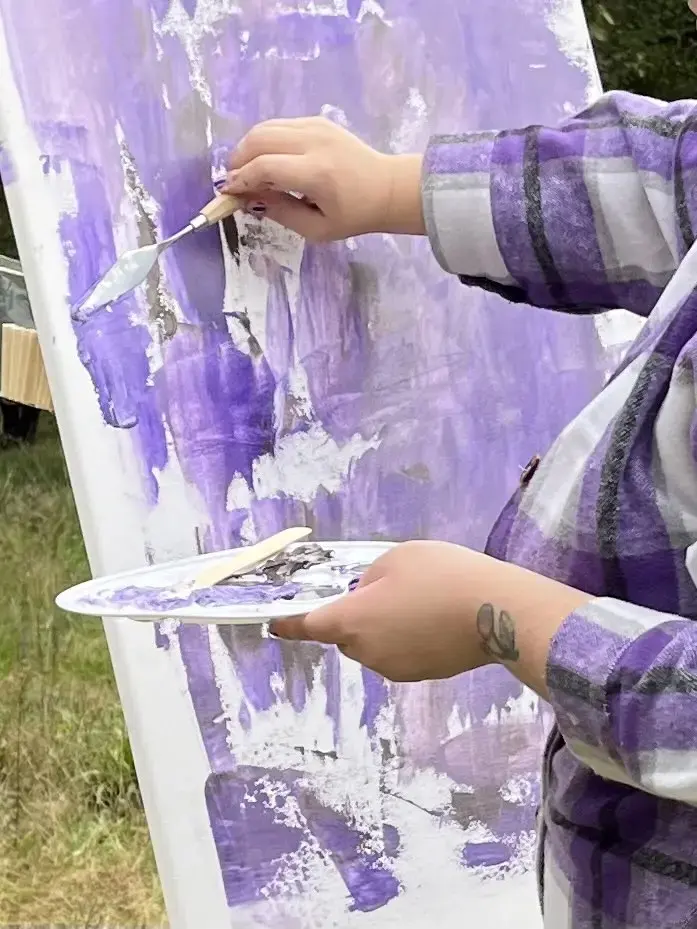

Agata Czacharska · artystka
Lubię moment,
kiedy jeszcze nie wiadomo,
co powstanie.
Tworzę, eksperymentując z kolorem, fakturą i formą. Najbliższy jest mi sam proces: swobodny, intuicyjny i otwarty na zmianę.

proces ponad
perfekcję
Portfolio
Wybrane prace
Autorski wybór prac Agaty — bez algorytmu i bez pośpiechu. Nowe kadry z pracowni pojawiają się także na Instagramie.
Podejście
Najciekawsze dzieje się po drodze.
Szczególnie bliski jest mi moment, w którym z pozornego chaosu zaczyna wyłaniać się coś nowego. Lubię zmieniać kierunek, zestawiać techniki i pozwalać pracy rozwijać się bez presji idealnego efektu końcowego.
Twórczość traktuję jako sposób wyrażania siebie i prowadzenia wewnętrznego dialogu. Każda praca jest zapisem decyzji, prób, przypadków i odkryć.
O mnie
Agata
Czacharska
artystka · edukatorka
absolwentka ASP we Wrocławiu
Jestem artystką z wykształceniem rzeźbiarskim. Ukończyłam specjalność rzeźba na Wydziale Malarstwa i Rzeźby Akademii Sztuk Pięknych we Wrocławiu.
Pracuję z technikami płaskimi i przestrzennymi. Szukam własnego języka pomiędzy kolorem, materiałem i intuicją. Gotowa praca jest dla mnie ważna, ale to droga do niej daje mi najwięcej energii.
Tworzenie razem
Prowadzę też warsztaty.
Na zamówienie przygotowuję twórcze spotkania dla dzieci, dorosłych i grup. Daję przestrzeń do eksperymentowania i działania bez oceniania, z uwagą skierowaną na proces zamiast idealnego efektu.
Zapytaj o warsztat



Wpadła Ci w oko któraś z prac?
Zapytaj o dostępne prace.
Najłatwiej złapiesz mnie w wiadomości na Instagramie.
Napisz do mnie